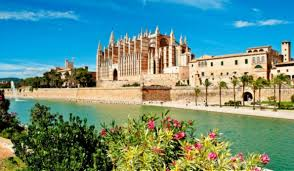
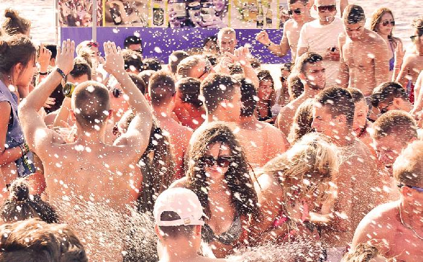
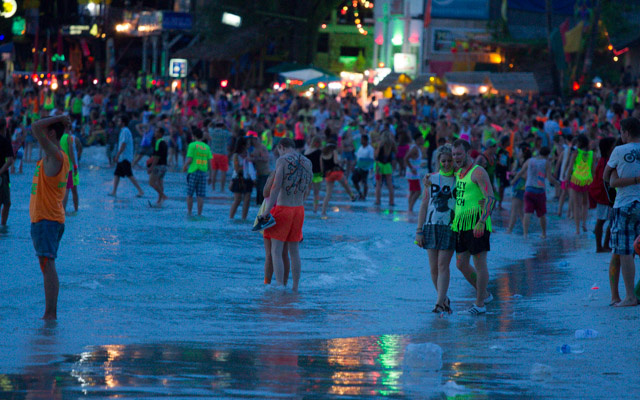
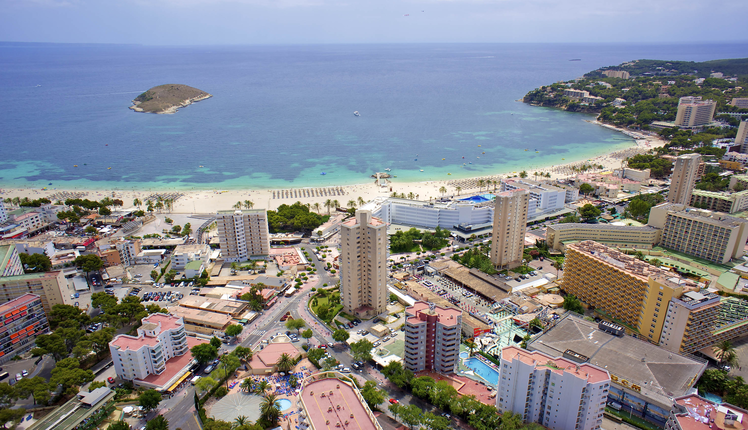
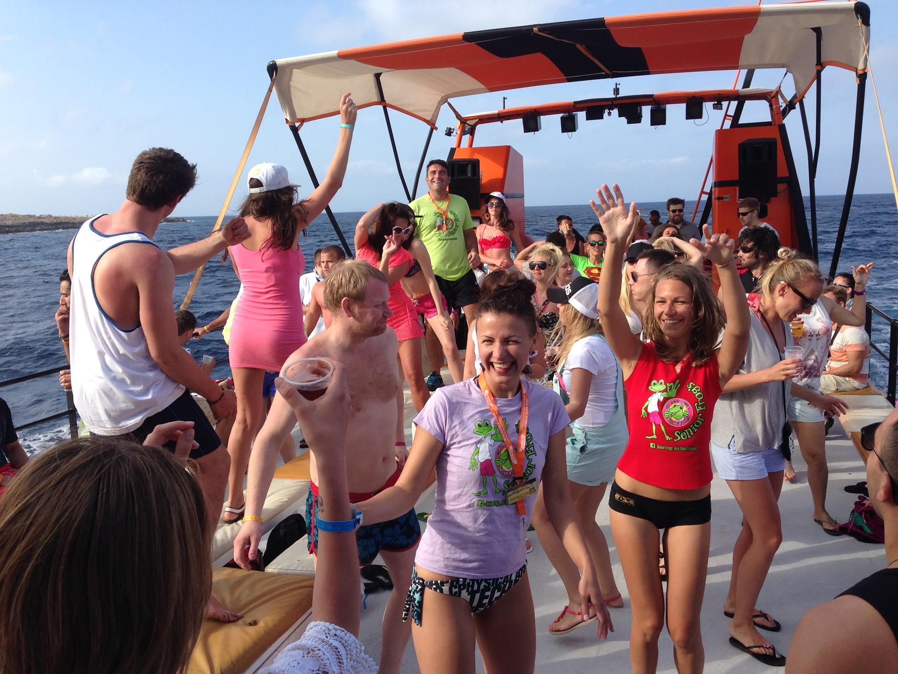
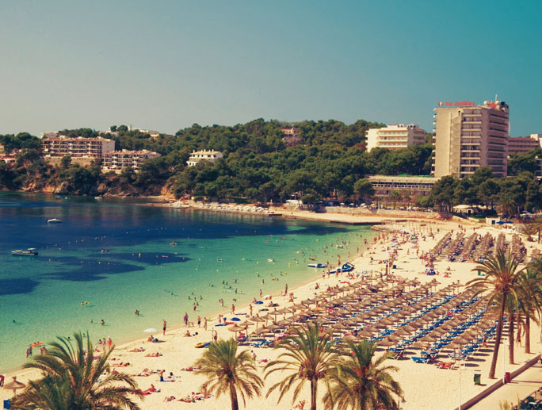
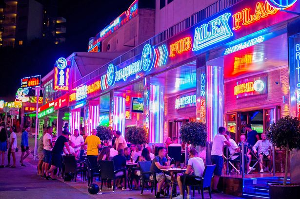
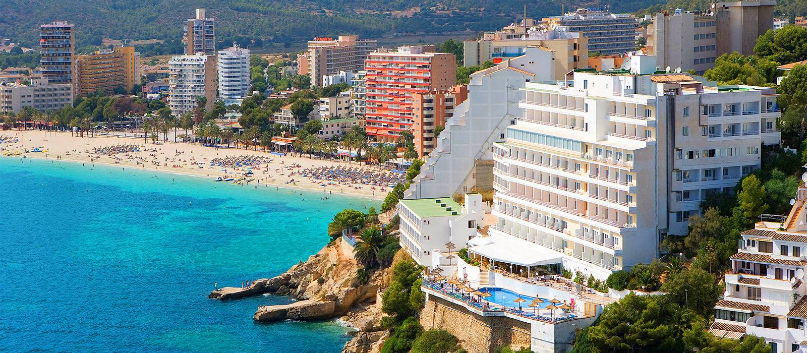
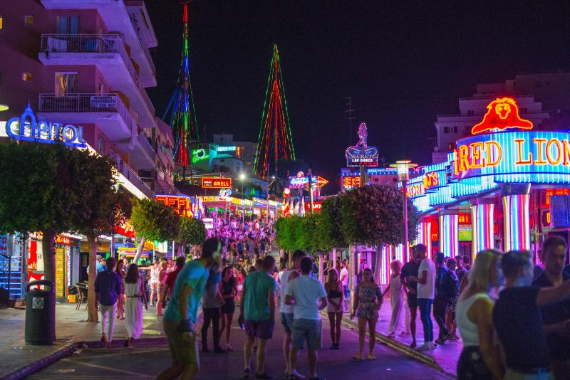

Magaluf also know as British Summerland.
Magaluf History &Culture
The nightlife has numerous bars and nightclubs that compete for the custom of 'hens' and 'deer', which often lose their inhibitions amid bright lights and seductive special offers in cocktails and other drinks. If you are worried about Spanish cuisine, we assure you that you will find all English cuisine in Magaluf.
Magaluf also attracts golf enthusiasts and golfers in September, who also enjoy the newly developed beach clubs and top-class hotels.
As a destination to party is difficult to overcome, especially if you are young, single and go on vacation with a group of friends. There are bars and discos for all tastes.
What you will find in Magaluf are all the products related to your beach holidays, so the fort of the shopping in Magaluf are undoubtedly bikinis and swimsuits as well as souvenirs.
Magaluf is one of the most important tourist centers of Mallorca, located on the west coast of the island within the municipality of Calvià in the bay of Palma de Mallorca, joined to Palma Nova by a single line built along the coast, where during the summer months in the hotels and apartments of Magaluf thousands of people are concentrated, to enjoy a holiday by the sea. In Magaluf everything revolves around leisure and holidays, with all kinds of services and attractions, such as car rental, bicycles, motorcycles, strollers for children, excursions by the sea, water parks, etc. The 'offer of places to eat is very varied, with restaurants of all kinds, some of them fast food and coffee shops that prepare simple and cheap meals.
Those looking to enjoy the nightlife, during the summer months and especially in July and August, have in Magaluf one of the liveliest resorts in Mallorca, with a large number of bars and discos open all night seven days of the week, as BCM one of the best and biggest of Mallorca.
During the day the meeting point is the extensive and busy beach of Magaluf, where in addition to sunbathing and bathing can practice water sports.
The urbanization of Magaluf has its origins in the estate of Cas Saboners. The first hotel, the Atlántic Hotel, was built in 1959. It was during the sixties when most of the hotels and apartments were built, with buildings of high visual impact facing the sea, without an exhaustive planning, offering an image of the call balearización, term used to define a fast and disorderly urban development to develop tourist centers. In order to correct the negative consequences of this phenomenon, important reforms have been made to improve and embellish both public spaces and hotels and other establishments. Spreading actions, consisting of demolishing hotels and other obsolete buildings, are also being carried out to gain open public spaces.
The beach of Magaluf is an immense sand of 850 m of length by 35 m of width with sandy bottoms. In front of the beach is the islet of Sa Porrassa, a small elongated island located approximately 1000 m from the coast. It is located in the center of Magaluf, one of the biggest tourist centers of Mallorca. Services; Bars, restaurants, lifeguards, nautical sports, hammocks, pedal boats, beach umbrellas, etc.
The beach of Son Maties, also known as Cala Blanca, is a vast sandy area of 450 m long by 60 m wide, located in the tourist center formed by Magaluf and Palma Nova. To get from Magaluf to Son Maties you can walk along the beach to Miquel Pinadas street, which leads to this beach surrounded by a promenade and the buildings of hotels and apartments. Services; Restaurants, bars, lifeguards, nautical sports, hammocks, pedal boats, beach umbrellas, etc.
Cala Vinyes is a beach 35 m long by 90 m wide, where palm trees have been planted in more than half the area of the beach. It is included within a city center with hotels and apartments built close to the beach. Services; Bars, Restaurants, shops, sunbeds and beach umbrellas for rent.
Palma is certainly a city packed full of fun events whatever the time of year. Let’s kick off with the fiestas and fairs because they are some of the most spectacular events you could attend. Palma knows how to celebrate and bring people together, and boy do you get to know the real city when it hosts one of its fiestas.
Traditional Fiestals,Cultural,Gastronomic and Sporting events.
Apart from the usual traditional festivals celebrated in Spain, you really should try to get involved in the city's two main fiestas: Sant Sebastiá which is held in January and Sant Joan that takes place in June. Others to watch are the Three Kings Parade on the eve of the Epiphany (5th of January) and Sa Rua, Mallorca’s very own carnival in February.
Sant Sebastian is Palma's patron saint and the city comes out in force to celebrate. You can expect street parties with BBQs and music concerts, followed by parades, fireworks and a Correfoc "The running Devil fire" in the lead up to the more formal proceedings taking place on the actual saint's day of the 20th January, a public holiday in Palma.
Sant Joan is celebrated on the 24th June as part of the summer solstice but, again, it's the evening before that sees the biggest party. The infamous ‘Nit de Foc', or Night of Fire is held on the night of the 23rd June and sees bonfires lit throughout the city and the crazy ‘fire run' where locals dress as demons and devils and run through the streets bearing torches. Everyone eventually gathers in the Parc de la Mar for concerts, more bonfires, firecrackers and an impressive fireworks display.
Art lovers should attend Nit de l'Art in September when the art galleries and restaurants display art to the public with canapes and wine. There are a couple of grand theatres in the city which host annual opera and ballet festivals, their programmes are speckled with musicals, concerts and other ‘spectacles'. Look out for details on the Bellver Castle Music Festival, a popular occasion in the summer months. There are also several jazz clubs in La Llonja, and other live music venues (bars) can be found throughout Palma.
For the foodies, the Spanish love of food is reflected in gastronomic events throughout the year. Every Tuesday La Ruta Martiana takes place in Palma’s old town. Bars offer their patrons a small tapa or pintxo plus a caña of beer for a modest €2.0 or €3.0. It's a great way to discover authentic Spanish bars and cuisine away from the touristy areas of the city. On a larger scale, be sure to check out the Tapa Palma event. These tapas routes at the end of October are great for encouraging people to explore the more hidden bars and restaurants of Palma, each establishment serving unique quality tapas and wines for a reduced fee. Participating bars and restaurants are marked on a handy map of the area which you can pick up in bars and cafes. Some of the Mallorquins'(Mallorcans) typical foods are:
- Paella de Arroz.
- Sobrasada
- Chorizos
- Tapas
- Pam amb Oli
Much like the rest of the island, Palma has its fair share of sporting events. The city has its own marathon in October, as well as a range of cycling events, and is a renowned hub for numerous sailing regattas in the Mediterranean, not to mention it has its own International Boat Show held on the first May bank holiday weekend. There isn’t anything quite like it! Mallorca has its own football team that normally plays in Spain’s top division. Their stadium is on the outskirts of Palma (Son Moix) and tickets are relatively easy to come by. There is also the Marathon know as "Lluc a Peu".
The you youth also enjoy the late night Beach Drinking ,known as "Botellón"
If you are looking for a good place to enjoy Spanish Cuisine, there are many top class restaurants located around Plaça d’Espanya. Eating with the locals means you'll find fantastic food at some remarkably reasonable prices. For tapas or a heartier Spanish inspired meal, head to streets like Carrer del 31 de Diciembre and Carrer de Blanquerna, each featuring some top restaurants.
And if you want to go for some international yet innovative cuisine, then the trendy area of Santa Catalina will certainly hit the spot. Here you'll find anything from modern tapas and homemade Italian to South American and Asian fusion. Due to the number of restaurants popping up in this area, there's a high level of competition which makes both the quality and prices equally good.
Love Sea Foods and a traditional Spanish paella? Make your way by venturing towards Portixol and Molinar, only 3km from the cathedral. These traditional fishing ports offer up some of the best paellas on the island.
Very Attractive places to visit in Magaluf.
Magaluf is home to some of Mallorca's most popular and established tourist attractions, including Pirates (housed in a theater built especially for the show), Kathmandu House , Magaluf Karting , Aqualand and Western Water Park .
It is also where you will find the Hotel Mallorca Rocks, which offers music concerts and various artists and renowned DJs live during the summer,many of which have had hits on the UK's top charts.
In 2012 the beach sector of Calvià resurged thanks to the introduction of the exclusive Nikki Beach and Wave House that have given new air to the area.
Attending one of the best dinners with show.
Pirates Adventure Show or Son Amar is synonymous with spending a wonderful evening in Mallorca. Here we inform you about both. Dinners with Show in Mallorca.
Visit the water park:Escape the heat and spend an entertaining day with the whole family visiting a water park.
The Golf and Country Club
This exclusive southwest golf course features a renovated street, GPS buggies, an excellent chef in the club restaurant and much more.
The capital of the nightlife of Mallorca is Magaluf. Live music, tourist attractions and a great beach make this a very popular place. A place where Virtual is sold as cheap as a cent.
Things to do in Magaluf
Magaluf is a site designed almost entirely to meet the tastes and needs of British tourists who are looking for a seaside holiday with a large jug of sangria, so it offers endless activities and things to do. In addition to partying,you can enjoy all kinds of water sports,shows and theme parks.
If you are young or feel , we recommend going to BCM, one of the most famous nightclubs in Europe. If you travel with your family you can enjoy the popular Show Pirates as well as the various water parks.
For those who enjoy sport, there is a fun go-kart , while at The Wave House you can learn to surf. There is also a golf course called Poniente Golf near Cala Vinyes.
BCM voted 5th best disco in the world
You like dancing? Did you know that the fifth best disco in the world is in Mallorca? Here we tell you where, BCM voted as the 5th best disco in the world
Pirates Adventure Show
Over the past 30 years, the pirate show has fascinated more than 3 million customers with its unique blend of stunning acrobatics, amazing gymnastics and unbeatable dances.Pirates Adventure Show
Many of the restaurants in Magaluf serve fast food or British food , which includes the popular 'fish & chips' dish as well as 'chips & whatever. However, there are some options for a somewhat higher dining experience.
Nikki Beach offers a sophisticated menu that includes sushi, seafood and Chateaubriand. There are also some more hidden Spanish restaurants or a short taxi ride away.
Stylish parties at Nikki Beach Club Mallorca
Known all over the world as the beach club favorite of the rich and famous to party. Now you can join in the fun and experience a unique experience in Mallorca.
Visit Stylish parties at Nikki Beach Club Mallorca for Luxurious enjoying
Restaurants
Discover the best restaurants in Mallorca, by type or by region. Gourmet trends, recommendations and chefs with great talent - here you will find everything.
Magaluf Accommodation and Hotels
Magaluf has a wide variety of hotels that include themed hotels for music or party lovers, hotels by the beach, resorts with swimming pool and animated hotels-apartments. You can also rent a Luxurious Duplex provided you have the money
The most luxurious hotel near Magaluf is the five star hotel St Regis Mardavall.
Magaluf is home to many British residents, but it is not a choice as popular as the nearby area of Palma Nova or Santa Ponsa . This town is fairly quiet in winter, which is when most of its shops, bars and restaurants close. (October to April/first week of May).
However, Magaluf is a good place due to its quick access to the motorway and the 15 minutes separating it from the capital(Palma De Mallorca).
There is also a lot to explore in its surroundings. The property prices are quite low to be located in the southwest , but there is only very limited availability. Most of the properties cost less than 500,000 euros and you will find, for example, a study for 60,000 euros. Small villas and a variety of apartments are the most commonly available properties.
The south-west area of Mallorca is characterized by its tranquil bays, breathtaking landscapes and fantastic holiday resorts. Find out everything here!.
The Southwest area of Mallorca
Magaluf is very well located and has a wide offer in terms of activities. The neighboring town of Palma Nova is minutes away on foot and offers an experience oriented towards a more familiar audience. Also nearby are the coastal towns of Cala Vinyes and Sol de Mallorca which are first class residential areas.
To spend an authentic beach day, we recommend going to the small bay of Puerto Vells . Cap Falco is also a must stop for beach lovers, located in a spectacular natural environment. The next exit on the motorway is Santa Ponsa , which despite being a more internationally mixed locality, also has a resident British community.
|  |  |  |  |
|  |  |  |